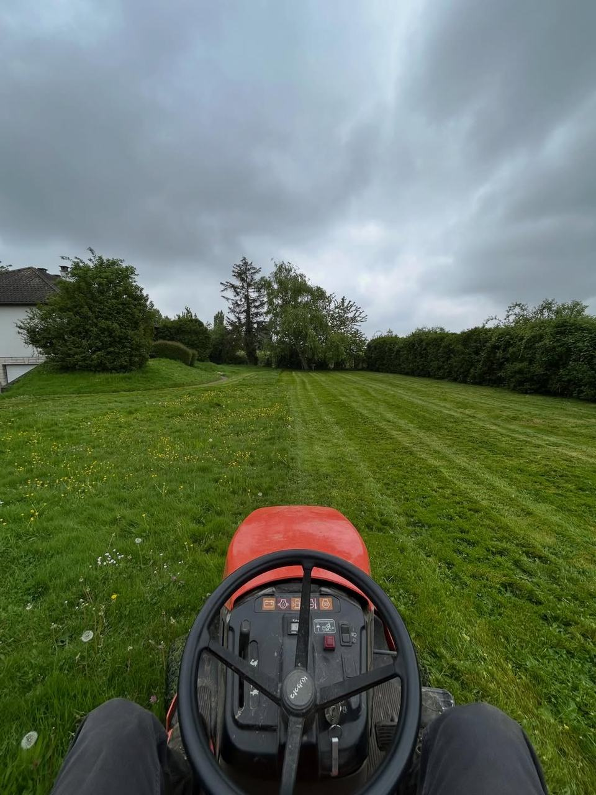

Tonte des pelouses
Tonte à la bonne hauteur selon la saison, finitions le long des bordures et ramassage de l’herbe.
Tonte · Haies · Feuilles · Débroussaillage
Ponctuellement pour une remise au propre, ou régulièrement pour ne plus y penser : nous prenons soin de vos pelouses, haies et massifs au fil des saisons.

Nos prestations
Tonte à la bonne hauteur selon la saison, finitions le long des bordures et ramassage de l’herbe.
Thuyas, lauriers, charmes ou haies champêtres : une taille nette et droite, déchets ramassés.
Arbustes à fleurs, oliviers taillés en boule, sujets d’ornement : une silhouette équilibrée, un végétal respecté.
Pelouses, allées et massifs débarrassés des feuilles pour éviter l’étouffement du gazon.
Terrain laissé à l’abandon, ronces, friches : on rend le jardin à nouveau praticable.
Le brûlage des déchets verts est interdit aux particuliers : nous emportons tout pour vous.
Deux formules
Pour une remise en état, avant une vente, au sortir de l’hiver ou une fois l’an pour les grosses tailles.
Un extérieur entretenu toute l’année, sans contrainte. Pour les particuliers comme pour les entreprises, petites et grandes surfaces.

Taille de haies
L’Office français de la biodiversité recommande de ne pas tailler les haies entre le 15 mars et le 31 juillet, pendant la reproduction des oiseaux.
Nous concentrons donc les grosses tailles en fin d’hiver puis à la fin de l’été et en automne. Résultat : des haies plus denses, et des oiseaux tranquilles.
Mois par mois
Un repère simple pour savoir quand prévoir chaque intervention. Le mois en cours est mis en évidence.
| Travaux | Janv. | Févr. | Mars | Avr. | Mai | Juin | Juil. | Août | Sept. | Oct. | Nov. | Déc. |
|---|---|---|---|---|---|---|---|---|---|---|---|---|
| Tonte | possible | période idéale | période idéale | période idéale | période idéale | période idéale | période idéale | période idéale | possible | |||
| Taille de haies | période idéale | possible | possible | période idéale | période idéale | possible | ||||||
| Ramassage des feuilles | période idéale | période idéale | période idéale | |||||||||
| Élagage | période idéale | période idéale | possible | possible | période idéale | période idéale | ||||||
| Plantations | possible | possible | possible | possible | période idéale | période idéale | ||||||
| Débroussaillage | période idéale | possible | possible | période idéale | période idéale |
Conseil d’automne
Laissées sur la pelouse, les feuilles mortes étouffent le gazon et favorisent la mousse.
C’est aussi le meilleur moment pour planter haies et arbres, et pour programmer l’élagage d’hiver avant que les plannings ne se remplissent.
Planifier un passageQuestions fréquentes
Au printemps, quand l’herbe pousse vite, une tonte par semaine ou tous les dix jours. En été, on espace les passages et on relève la hauteur de coupe pour que la pelouse résiste mieux à la sécheresse.
Idéalement en fin d’hiver, puis de la fin de l’été à l’automne. Entre le 15 mars et le 31 juillet, on évite les tailles sévères pour ne pas déranger les oiseaux qui nichent.
Non : le brûlage à l’air libre des déchets verts est interdit pour les particuliers. Nous évacuons les déchets de tonte et de taille issus de nos interventions.
Non, le devis est gratuit et sans engagement. Nous passons voir votre jardin pour vous proposer l’entretien le plus adapté.
Parlez-nous de votre jardin : surface, haies, fréquence souhaitée. Nous vous proposons une formule sur mesure.